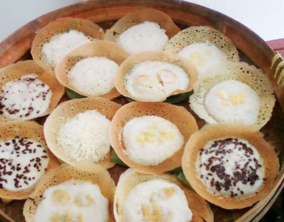
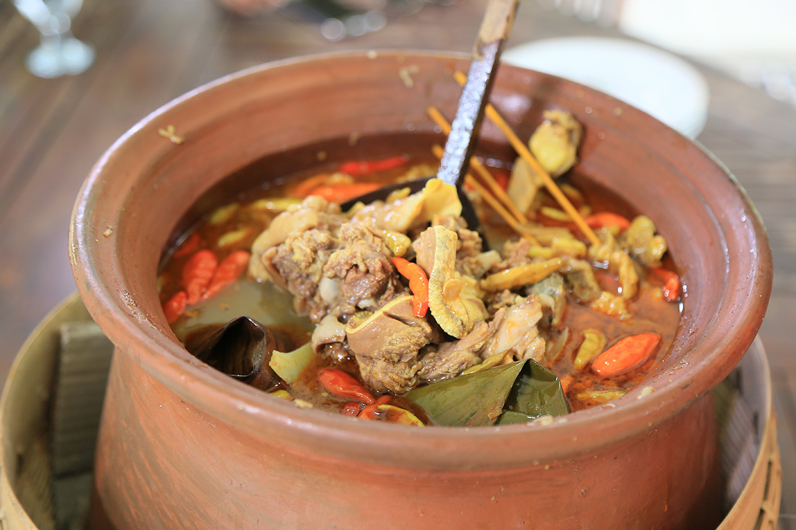
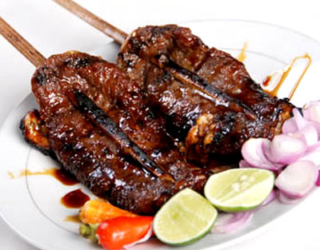
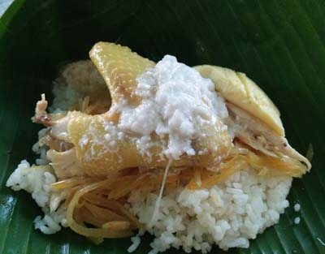
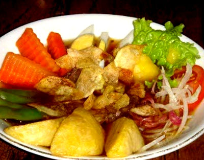

Kuliner
Serabi Solo

Serabi Solo merupakan makanan seperti pancake tetapi sedikit berbeda dari daerah lain. Bentuk serabi Solo adalah berbentuk oval dengan tekstur krispi disekelilingnya. Serabi Solo terbuat dari tepung beras yang dicampur dengan santan kelapa
dan gula sheingga memiliki rasa manis dan gurih. Disamping serabi solo tanpa topping juga terdapat topping lainnya seperti soklat, nangka dan pisang. Serabi Solo banyak ditemukan di sepanjang jalan Slamet Riyadi atau di Serabi Notosuman,
di Jalan Mohammad Yamin, buka dari pagi hingga sore hari.
Tengkleng

Tengkleng merupakan makanan semacam gulai kambing tetapi kuahnya tidak memakai santan. Isi tengkleng adalah tulang belulang kambing dengan sedikit daging yang menempel, bersama dengan sate usus, sate jerohan, otak dan organ-organ lain
seperti mata, telinga, pipi, kaki dan lain-lain. Kenikmatan menyantap tengkleng akan terasa ketika kita menggerogoti sedikit daging yang menempel pada tulang dan menghisap isinya. Makanan ini dapat ditemukan di Samping Gapura Pasar
Klewer yang bernama Tengkleng Ibu Ediyem pukul 11.00-15.00 WIB dan Warung Tengkleng Yu Tentrem di Jl Letjend Sutoyo pukul 09.00 WIB.
Sate Buntel

Sate Buntel terbuat dari daging kambing cincang yang dibumbui bawang merah dan lada dan kemudian dibungkus dengan lemak. Sate buntel nikmat disantap dengan saus kacang, potongan cabai, bawang merah, kubis dan tomat. Anda bisa menikmati
sate buntel di warung makan sate buntel yang berlokasi di Jalan Sutan Syahrir nomer 39, Widuran. Warung makan ini menawarkan berbagai menu selain sate buntel seperti sate kikil dan gulai kambing.
Nasi Liwet

Nasi Liwet adalah salah satu jenis makanan khas Solo. Nasi Liwet memiliki cita rasa gurih dan lezat karena dimasak dengan kaldu ayam. Nasi liwet disajikan dengan sayur labu siam dan telur ayam rebus serta kumut (santan kelapa kental) dalam
pincuk (daun pisang). Anda bisa menikmati nasi liwet di Nasi Liwet Wongso Lemu, di daerah Keprabon. Buka setiap hari mulai jam 6 sore.
Selat Solo

Selat Solo merupakan salah satu makanan khas Kota Solo, merupakan jenis makanan yang dipengaruhi oleh cuisine barat dengan cita rasa lokal. Asal selat solo diadaptasi dari western slaad, terdiri dari potongan daging sapi, buncis rebus,
kentang, wortel, telur dan saus mayonais kemudian disiram dengan kuah kecap. Anda bisa menikmati lezatnya selat Solo di warung Selat Mbak Lies, Serngan atau di restauran Kusuma Sari, Nonongan. Kedua warung ini buka jam 9 pagi.